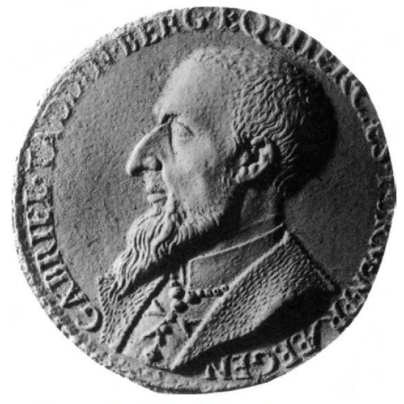
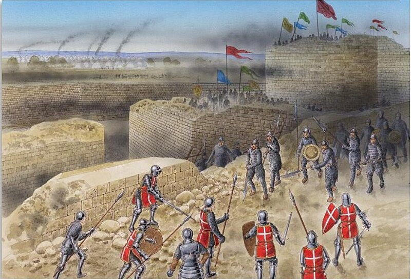

О построении турецких войск перед началом осады и штурма крепости мы можем узнать из манускрипта Ахмеда Хафуза.
«Сулейман разделил свои войска на пять армейских корпусов: великий визирь Пир-Мехмет Паша, сын Аба-Бекира, человек с несомненными военными способностями, получил приказ занять позиции между побережьем (залив Acandia) и воротами св. Иоанна (Kyzil Capou или Coskinou), (находясь напротив укреплений, занятых лангом итальянцев –g._g.); на левом фланге у него находился Кассим Паша, командующий войсками Анатолии, (ему противостоял ланг Прованса –g._g.); за ним следовал второй визирь Мустафа Паша (напротив ланга Англии–g._g.), слева от которого, вплоть до ворот Амбуаз (Eghri Capou) – третий визирь Тинат Ахмед Паша (ему противостояли ланги Оверни, Кастилии и Арагона–g._g.); за ним находились войска беглербега (бейлербея) Румелии Айяз Паши и аги янычар Бали Ага. (напротив позиций лангов Франции и Германии–g._g.) Каждый корпус получил достаточное количество пушек для организации осадных батарей. Шатер султана был разбит на высоте Кизил Тепе.»
У ряда историков того времени приводится оценка численности каждого корпуса в 50 тысяч человек (R.B.Merriman, Suleiman the Magnificent. 1520-1566, Harvard University Press,1944, p.65). Видимо, здесь присутствует определенное преувеличение, даже с учетом того, что в это число включены вспомогательные силы армии (саперы, землекопы и пр.)
1 августа беглербег Румелии первым начал штурм крепости. Объектом этой атаки стали рыцари германского ланга во главе с Кристофом де Вальднером, рыцарем из древнего тирольского рода, уже имевшего большой боевой опыт. По позициям германцев открыли огонь из двадцати одного орудия. Одновременно двадцать две пушки начали стрелять по башне св. Николая. Затем начали вести огонь четырнадцать батарей по три орудия в каждой по бастионам испанского и английского лангов и семнадцать батарей – по укреплениям итальянского ланга.( Jacques, bastard de Bourbon, цит. ранее соч.) Но этот огонь не смог нанести никаких видимых повреждений укреплениям родосских рыцарей. А контрогонь артиллерии иоаннитов оказался не удивление эффективным. (Мы уже упоминали о заслуге в высокой эффективности огня военного инженера Габриеле ди Мартиненго). В дневнике султана Сулеймана появляются недоуменные записи, показывающие неожиданно большие потери османов среди командиров, в первую очередь командиров артиллерийских расчетов и команд стрелков, вооруженных фузеями. Громадные потери несли и войска турок, находящиеся в вырытых вокруг крепости траншеях.
Несколько недель велся обстрел, однако стены крепости оставались такими же неприступными, как и в начале штурма. Весь август турки вели земляные работы в надежде заложить мины под стены крепости. Но и здесь скорого успеха добиться не удалось. Защитники крепости не сидели в ожидании, они вели встречные подкопы и закладывали контрмины, сотнями уничтожая в обрушавшихся шурфах саперов противника. Поистине выдающуюся роль в этой противоминной войне сыграл все тот же Габриеле Мартиненго.

Талантливый итальянский инженер Габриеле Тадини ди Мартиненго из Брешии прибыл на Родос с Крита. О нем часто упоминает Сануто в своих Diarii. Рыцарь Антонио Босио, посетивший Крит, чтобы попросить у местных властей, наряду с отправкой отряда знаменитых критских лучников, разрешить также и переезд на Родос знаменитого инженера, получил ответ, что этот вопрос могут решить только власти Венеции. Однако Мартиненго сам принял добровольное решение присоединиться к защитникам Родоса. Венеция поспешила заверить османов, что венецианские власти здесь не при чем и что они запретили Мартиненго перемещаться на Родос.
Его изобретения очень помогли осажденным в течение всего периода осады. Он смог создать детекторы, определяющие работу саперов, делающих подкопы, и пути уничтожения этих подкопов вместе с саперами с помощью контрмин. В качестве таких детекторов, своеобразных «миноискателей», были использованы верхние части барабанов. Их мембраны чутко реагировали на любые колебания почвы, вызванные работой землекопов. Чтобы эти колебания стали заметны защитникам, Мартиненго предложил повесить на них маленькие колокольчики. Чем ближе были саперы, тем сильнее звенели колокольчики. Защитники делали встречные подкопы, в которые пускали удушливый газ от сгорания нефти или подводили контрмины.
Кроме того, Мартиненго пробурил специальные отверстия, соединяющие между собой казематы, которые находились на самых опасных направлениях, создав таким образом между ними систему «переговорных труб».
Именно Мартиненго перевез в Родос образ Филермской богоматери, который стал одной из святынь госпитальеров.
Только 4 сентября осаждавшим удалось успешно заложить мину под стены английского ланга. Мощный взрыв обрушил среднюю часть стены. В прорыв устремились тысячи турок, им удалось выйти на стены и захватить семь знамен родосских рыцарей.

Но великий магистр с подкреплением поспешил на помощь и штандарты ордена св. Иоанна вновь были водружены на стены, а турки отступили, потеряв более двух тысяч человек.
Продолжение последует.